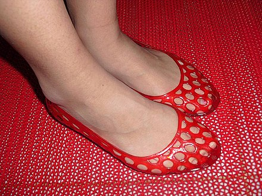
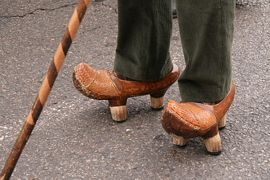
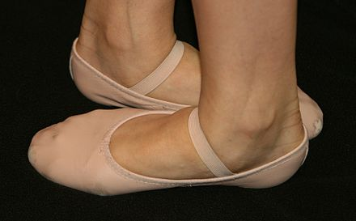
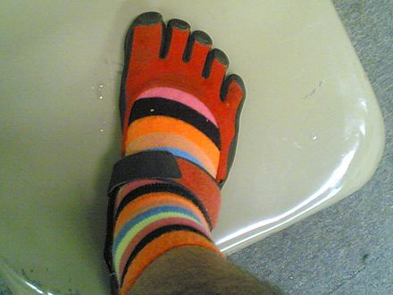
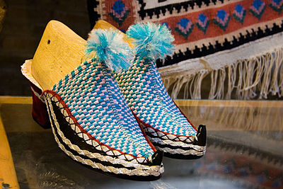
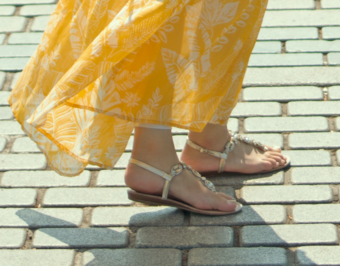

Jelly Shoes
Here are some jelly shoes. They are red. Aren't they great! Jelly shoes or jellies are a type of shoe made of PVC plastic. Jelly shoes come in a large variety of brands and colours and the material is sometimes infused with glitter. Its name comes from the French company called Jelly Shoes, founded by Tony Alano and Nicolas Guillon in 1980 in Paris.

Cantabria Albarca
Here is a Cantabria albarca. Cantabrian albarca is a rustic wooden shoe in one piece, which has been used particularly by the peasants of Cantabria, northern Spain. In the neighbouring province of Asturias madreñas are still being widely used in rural areas.

Ballet Shoes
Here are leather ballet shoes. Feet shown in fifth position! A ballet shoe, or ballet slipper, is a lightweight shoe designed specifically for ballet dancing. It may be made from soft leather, canvas, or satin, and has flexible, thin full or split soles. Traditionally, women wear pink shoes and men wear white or black shoes. Skin colored slippers—which are unobtrusive and thus give the appearance of dancing barefoot—are worn in modern ballets and sometimes modern dancing by both men and women.

Toe Shoe
This is a toe shoe. It has spots for each of your individual toes. The Vibram FiveFingers are a type of minimalist shoe manufactured by Vibram, originally marketed as a more natural alternative for outdoor activities (sailing, kayaking, canoeing, and as a camp or after-hike shoe).[1] The footwear is meant to replicate being barefoot and has thin, flexible soles that are contoured to the shape of the human foot, including visible individual sections for the toes.

Traditional Galesh
This is a traditional Galesh shoe. A kalash' or galesh (گالش) is a traditional footwear of Iran. The Kurdish cotton kalash is particularly famous in Marivan. Unlike most galoshes, the "galesh" are always handwoven and with specific fabrics. It is what people in Persia used to wear before the proliferation of the modern shoe, especially in the provinces of northern Iran. Galesh are still made today, but in the category of handicrafts and cultural produce.

Sandal
These are some fancy sandals! Sandals are an open type of footwear, consisting of a sole held to the wearer's foot by straps going over the instep and around the ankle. Sandals can also have a heel. While the distinction between sandals and other types of footwear can sometimes be blurry (as in the case of huaraches—the woven leather footwear seen in Mexico, and peep-toe pumps), the common understanding is that a sandal leaves all or most of the foot exposed. People may choose to wear sandals for several reasons, among them comfort in warm weather, economy (sandals tend to require less material than shoes and are usually easier to construct), and as a fashion choice.